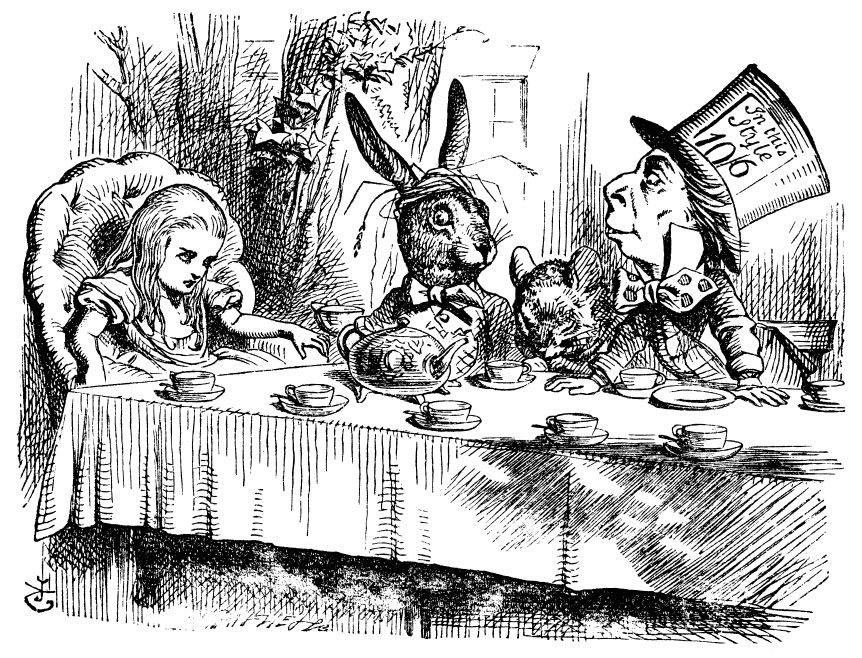
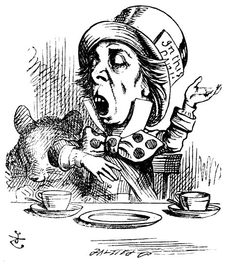
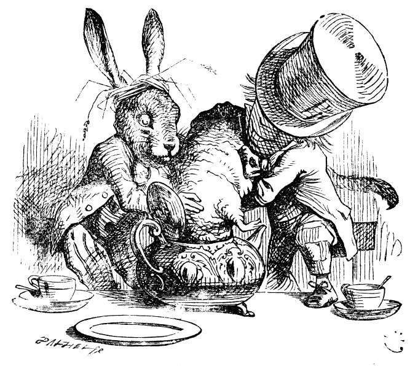

Evin önünde bir ağacın altına sofra kurulmuştu; Mart Tavşam’yla Şapkacı çay içiyorlardı; aralarında oturan Fındık Faresi derin uykudaydı; diğer ikisi dirseklerini ona dayamış, başının üzerinden konuşuyorlardı. “Fındık Faresi için çok rahatsız edici,” diye düşündü Alice, “ama uykuda olduğundan duymuyor herhalde.”
Masa koskocamandı, ama üçü bir arada masanın bir köşesine toplanmıştı. Alice’i gördükleri anda “Yer yok! Yer yok” diye bağrıştılar. “Yer çok, çok!” dedi Alice kızarak ve gidip masanın bir ucundaki büyükçe bir koltuğa oturuverdi.

“Biraz şarap alın,” dedi Mart Tavşanı, insanı cesaretlendirici bir ses tonuyla.
Alice, masanın her bir yanına baktı, fakat masada çaydan başka hiçbir şey yoktu. “Ortada şarap göremiyorum,” diye belirtti Alice.
“Yok zaten,” dedi Mart Tavşanı.
“O halde bana şarap teklif etmeniz hiç de nazik bir davranış değil,” dedi Alice kızarak.
“Davet edilmeden sofraya oturmak da nazik bir davranış değil,” dedi Mart Tavşanı.
“Bunun sizin sofranız olduğunu bilmiyordum,” dedi Alice. “Uç kişiden daha fazlası için kurulmuş bu sofra.”
“Saçlarının kesilmesi gerekir,” dedi Şapkacı. Bir süredir büyük merakla Alice’i inceleyen Şapkacı ilk kez söze karışıyordu.
“Başkalarının şahsına laf etmemelisiniz,” dedi Alice biraz sertçe, “bu çok ayıp.”
Bunları duyunca, Şapkacı’nın gözleri fal taşı gibi açıldı, ama buna karşılık olarak sadece, “Neden kuzgun yazı masasına benzer?” diye sordu.
“Hey, şimdi biraz eğleneceğiz!” diye düşündü Alice, “Bilmece sormaya başlamalarına çok sevindim.” Ardından yüksek sesle ekledi: “Galiba bunu tahmin edebilirim.”
“Bunun yanıtını bulabileceğini sandığını mı söylemek istiyorsun?” dedi Mart Tavşanı.
“Evet, öyle,” dedi Alice.
“O halde, ne demek istediğini söylemelisin,” diye devam etti Mart Tavşanı.
“Söylerim,” diye atıldı Alice, “en azından... ne söylüyorsam onu demek istiyorum... ikisi zaten aynı şey.”
“Hiç de aynı şey değil!” dedi Şapkacı, “öyleyse şöyle de diyebilirsin: ‘Yediğim şeyi görürüm’ ile ‘Gördüğüm şeyi yerim’ aynı şey.”
“Ya da şöyle de diyebilirsin,” diye ekledi Mart Tavşanı. “‘Aldığım şeyi severim’ ile ‘Sevdiğim şeyi alırım,’ da aynı şey.”
“Öyleyse şunu da diyebilirsin,” diye ekledi sanki uykudaymış gibi konuşan Fındık Faresi, ‘“Uyuduğumda nefes alırım’ ile ‘Nefes aldığımda uyurum,’ aynı şey.”
“Senin için gerçekten de aynı şey,” dedi Şapkacı. Tam burada konuşmalar kesildi, ortalık bir dakikalık sessizliğe gömüldü, bu arada Alice kuzgun ile yazı masası hakkında anımsayabildiklerini düşünüyordu, zaten fazla da bir şey anımsamıyordu.
Sessizliği ilk bozan Şapkacı oldu. “Bugün ayın kaçı,” dedi Ali-ce’e dönerek. Cebinden saatini çıkarmıştı; kaygılı kaygılı saate bakıyor, ara sıra sallayıp kulağına götürüyordu.
Alice bir süre düşünüp sonra da “Dördü,” dedi.
“İki gün ileri,” diye içini çekti Şapkacı. Sonra da, “Tereyağı bu mekanizmaya iyi gelmez demiştim,” dedi öfkeyle dönüp Mart Tavşanı’na bakarak.
“Bu en iyi tereyağıydı,” diye yanıtladı uysallıkla Mart Tavşanı. “Evet, ama içine ekmek kırıntıları da girmiş olmalı,” diye tersledi Şapkacı, “ekmek bıçağıyla yağlamayacaktın.”
“Mart Tavşanı saati alıp üzgün üzgün baktı. Sonra da çayının içine batırdı, oradan alıp tekrar baktı, ama ilk söylediğinden daha iyi bir cevap gelmedi aklına, “Biliyorsun, en iyi tereyağıydı.”
Alice uzanıp Tavşan’ın omzunun üzerinden merakla bakıyordu. “Ne komik bir saat!” dedi. “Günü gösteriyor, ama saati göstermiyor.”
“Neden göstersin ki?” diye homurdandı Şapkacı. “Senin saatin yılları gösteriyor mu?”
“Tabii ki, hayır,” diye yanıtladı Alice, hemen atılarak, “ama bu, uzun bir süre aynı yılda kaldığımızdan böyle.”
“Benim saatim için de aynı durum geçerli,” dedi Şapkacı.
Alice iyiden iyiye şaşkınlık içindeydi. Şapkacı'nın söylediği şeyin hiçbir anlamı yok gibiydi, ama cümle olarak doğruydu. “Pek anlamadım,” dedi olabildiğince kibar olmaya çalışarak.
“Fındık Faresi yine uykuya daldı,” dedi Şapkacı ve burnunun üstüne biraz sıcak çay döktü.
Fındık Faresi sabırsızca başını silkeledi ve gözlerini açmadan, “Tabii tabii,” dedi. “Ben de tam öyle diyecektim.”
“Bilmecenin cevabını bulabildin mi?” dedi Şapkacı yeniden Ali-ce'e dönerek.
“Hayır, aramaktan vazgeçtim,” diye karşılık verdi: “Cevabı ne?”
“En ufak bir fikrim yok,” dedi Şapkacı.
“Benim de,” dedi Mart Tavşanı.
Alice, bıkkın bıkkın içini çekti. Sonra da, “Cevapsız sorular sorarak harcamaktansa,” dedi, “zaman denen şeyi daha faydalı işlerle değerlendirebilirsiniz bence.”
“Sen de benim kadar iyi tanısaydın,” dedi Şapkacı, “Za-man'dan şey diye bahsetmez, şahıs zamiri kullanırdın.”
“Ne demek istediğinizi anlayamıyorum,” dedi Alice.
“Tabii ki anlayamazsın,” dedi Şapkacı küçümsercesine başını arkaya savurarak. “Sen, Zaman ile hiç konuşmamışsındır bile!”
“Belki de konuşmamışımdır,” diye karşılık verdi Alice ihtiyatla. ”Ama müzik derslerinde, zaman tutup el vururum.”
“İşte, tamam. Bu her şeyi açıklıyor,” dedi Şapkacı. “O tutulup vurulmaya gelmez. Yani, Zaman ile iyi ilişkiler kurarsan, saate senin istediğin hemen hemen her şeyi yapar. Örneğin, var say ki, saat sabahın dokuzu, tam derse başlama zamanı: Zamanın kulağına sadece fısıldaman yeter, saat bir çırpıda ilerleyiverir! Bir bakmışsın, bir buçuk, öğle yemeği zamanı!”
(“Keşke öyle olsa,” dedi Mart Tavşanı kendi kendine kısık bir ses tonuyla.)
“Ne müthiş olurdu,” dedi Alice, sonra da düşünceli düşünceli, “ama o zaman da... daha acıkmış olmazdım ki.”
“İlk anda değil belki,” dedi Şapkacı, “fakat saati dilediğin kadar bir buçukta tutabilirsin.”

“Siz böyle mi idare ediyorsunuz Zamanı?” diye sordu Alice.
Şapkacı kederli kederli başını salladı. “Artık ben edemiyorum!” diye karşılık verdi. “Geçen martta kavga ettik... Tam bunun kızma dönemi öncesiydi...” (Çay kaşığıyla Mart Tavşam’m işaret ediyordu.) “... Kupa Kraliçesi’nin verdiği büyük konser sırasındaydı, ben de şu şarkıyı söyleyecektim:
Parla, parla küçük yarasa!
Nelerle meşgulsün acaba!
Bu şarkıyı belki sen de biliyorsun.”
“Buna benzer bir şey duymuştum,” .dedi Alice.
“Hani gerisi de şöyleydi,” diye devam etti Şapkacı:
Uçarsın dünyanın üzerinde
Çay tepsisi gibisin gökyüzünde
Parla, paria-
Tam bu sırada Fındık Faresi şöyle bir silkindi ve uykusunun arasında “Parla, parla, parla, parla-’’ diye söylemeye başladı, bu terane o kadar uzadı ki, susturmak için Fındık Faresi’ni çimdiklemek zorunda kaldılar.
“Daha ilk kıtayı bitirmemiştim ki,” dedi Şapkacı, “Kupa Kraliçesi yerinden fırlayıp bas bas bağırarak “Zamanı öldürüyor! Uçurun kellesini!’ dedi.”
“Ne kadar vahşice!” diye haykırdı Alice.
“İşte o günden beri,” diye devam etti, Şapkacı kederli bir ses tonuyla, “istediğim hiçbir şeyi yapmıyor! Saat hep altıyı gösteriyor.”
O zaman Alice’in kafasında şimşek çaktı. “Masada bu kadar çok çay takımı olmasının nedeni bu mu öyleyse?” diye sordu.
“Evet, bu,” dedi Şapkacı içini çekerek. “Hep çay zamanındayız. Bunları yıkayacak zamanı bile bulamıyoruz.”
“O halde hep masanın etrafında dönüp duruyor olmalısınız.”
“Evet, öyle,” dedi Şapkacı, “takımlar kirlendikçe dönüyoruz.”
“Peki ya tekrar başa döndüğünüzde ne oluyor,” diye sormaya kalkıştı Alice.
“Konuyu artık değiştirsek,” diye lafa girdi Mart Tavşanı esneyerek. “Bu konudan sıkılmaya başladım. Bu küçük hanımın bize bir masal anlatmasını öneriyorum.”
Bu teklif karşısında oldukça telaşlanan Alice, “Kusura bakmayın. Ama hiç masal bilmiyorum,” dedi.
“O halde Fındık Faresi anlatsın!” diye bağırdı diğer ikisi. “Fındık Faresi, uyan.” Ve ikisi iki yandan çimdiklediler.
Fındık Faresi usulca gözlerini açtı. “Uyumuyordum,” dedi kısık, cılız bir sesle. “Bütün söylediklerinizi duydum çocuklar.”
“Bize bir masal anlat!” dedi Mart Tavşanı.
“Hadi anlat, lütfen!” diye yalvardı Alice.
“Ve hızlı hızlı anlat,” diye ekledi Şapkacı, “yoksa daha bitmeden uykuya dalarsın.”
“Bir varmış, bir yokmuş. Üç küçük kız kardeş varmış,” diye başladı Fındık Faresi anlatmaya aceleyle; “Adları da Elsie, Lacie ve Tillie’ymiş. Bir kuyunun dibinde yaşarlarmış.”
“Ne yiyip içerlermiş?” diye sordu, böyle şeyler hep ilgisini çeken Alice.
“Şeker pekmezi,” dedi Fındık Faresi, birkaç dakika düşündükten sonra.
“Sadece bunu yemiş olmalarına imkân yok,” dedi Alice kibarca, “yoksa hastalanırlardı.”
“Hastalanmışlar,” dedi Fındık Faresi, “çok hastalanmışlar.”
Alice, bu garip yaşam şeklinin nasıl bir şey olduğunun kendince hayalini kurmaya çalıştı; fakat öyle bir şaşkınlık içindeydi ki, şöyle bir soruyla sözlerine devam etti. “Ama neden bir kuyunun dibinde yaşarlarmış?”
“Biraz daha çay al,” dedi Mart Tavşanı Alice'e, gayet ciddi bir tavırla.
“Daha hiç çay içmedim ki,” diye karşılık verdi Alice gücenik bir ses tonuyla, “o yüzden biraz daha çay alamam.”
“Biraz daha az alamam demek istedin herhalde, çünkü hiçten daha fazla almak çok kolay.
“Kimse senin fikrini sormadı,” dedi Alice.
“Şimdi kim başkalarının şahsına laf ediyormuş bakalım?” dedi Şapkacı zafer kazanmış bir edayla.
Alice, buna karşılık ne söylemesi gerektiğini pek bilmiyordu. Bu yüzden birazcık çay, ekmek ve tereyağı aldı, sonra da Fındık Faresi’ne dönüp sorusunu tekrarladı. “Neden o kuyunun dibinde yaşıyorlarmış?”
Fındık Faresi, kendine bir iki dakika düşünme payı bırakıp, ardından da “bu bir şeker şerbeti kuyusuymuş da ondan,” dedi.
“Böyle şey olmaz!” diyen Alice tam sinirlenmeye başlamıştı ki, Şapkacı ve Mart Tavşanı ona, “Şişt! Şişt!” dediler, bunun üzerine Fındık Faresi somurtarak, “Eğer nazik olmayacaksan, masalın geri kalanını kendi başına tamamla,” dedi.
“Hadi, ne olursun, devam et!” dedi Alice. “Bir daha sözünü kesmeyeceğim. Belki de bir tane de böyle bir kuyu vardır.”
“Bir tane, öyle mi?” dedi Fındık Faresi haksızlığa uğramış olmanın verdiği öfkeyle. Yine de sözlerine devam etti. “İşte, böyle-ce bu üç kız kardeş... çekip duruyorlarmış.”
Alice verdiği sözü unutarak atılıp, “Ne çekiyorlarmış?” diye sordu.
“Şeker şerbeti,” dedi Fındık Faresi, bu sefer hiç düşünmeden.
“Temiz bir fincan istiyorum,” diye araya girdi Şapkacı; “hadi, bir ileri kayalım.”
Şapkacı konuştuğu sırada bir ileri kaydı, onu Fındık Faresi izledi. Mart Tavşanı, Fındık Faresi’nin yerine kaydı. Alice de pek isteksiz bir şekilde Mart Tavşanı’nın yerini aldı. Bu değişimden tek kârlı çıkan Şapkacı oldu. Mart Tavşanı daha biraz önce süt sürahisini tabağına devirdiğinden, Alice’in durumu eskisinden de berbattı.
Alice, Fındık Faresi’ni yeniden gücendirmek istemiyordu, o yüzden sözlerine dikkatlice başladı. “Şey, doğrusu pek anlamadım. Şeker şerbetini nerden çekiyorlarmış?”
“Su kuyusundan su çekersin,” dedi Şapkacı, “o halde şeker şerbeti kuyusundan da şeker şerbeti çekersin, diye düşünüyorum... öyle di mi aptal!”
Alice, bu son sözleri pek dikkate almaya yanaşmayarak, “Ama kuyunun içinde yaşıyorlarmış,” dedi Fındık Faresi’ne.
“Tabii ki,” dedi Fındık Faresi, “kuyunun içinde yaşadıklarını söylemiştim başında.”
Bu yanıt karşısında, zavallı Alice’in zihni allak bullak olmuştu, bir süre hiç sözünü kesmeden Fındık Faresi’nin devam etmesine izin verdi.
“İşte böylece çekip duruyorlarmış,” diye devam etti Fındık Faresi esneyip gözlerini ovuşturarak; öyle ya epey uykusu gelmişti. “Her türden şeyi çekiyorlarmış... F ile başlayan her şeyi.”
“Neden F ile başlayan?” diye sordu Alice.
“Neden olmasın?” diye karşılık verdi Mart Tavşanı.

Alice sustu.
Fındık Faresi gözlerini kapayıp çoktan uykuya dalmıştı bile; ama Şapkacı tarafından çimdiklenir çimdiklenmez, hafif bir çığlık atarak yeniden uyanıp masalına devam etti. “... F ile başlayan şeyler, örneğin; fare kapanı, feza, feraset, fazlalık... hani fazlalığı var eksiği yok deriz ya... Fazlalık diye bir şeyin çekildiğini ömründe hiç gördün mü?”
“Şey, yani gerçekten bana mı soruyorsunuz?” dedi Alice kafası oldukça karışmış bir şekilde, “demek istiyorum ki... yani bilmiyorum galiba.”
“O halde konuşma artık,” dedi Şapkacı.
Alice, kabalığın bu kadarına da artık dayanamadı; şiddetli bir tiksinti içinde yerinden kalkıp çekip gitti; Fındık Faresi anında uykuya daldı; Alice, belki kendisini geri çağırırlar diye bir iki kez dönüp arkasına baktı, ne ki diğer ikisi onun gidişinin farkında bile değildiler; en son dönüp onlara baktığında Fındık Faresi’ni çaydanlığın içine sokmaya çalışıyorlardı.
“Ne olursa olsun, bir daha asla oraya gitmeyeceğim!” dedi Alice korunun içinde dikkatle ilerlerken. “Ömrümde gördüğüm en aptalca çay partisiydi!”
Tam bunları söylediği sırada, ağaçlardan birinin kapısı olduğunu fark etti. “Bu çok tuhaf. Ama bugün ne tuhaf değil ki? Şuradan içeri girivereyim,” dedi ve girdi.
Kendini bir kez daha o uzun salonda, küçük cam masanın yanında buldu. “Bu sefer aklımı kullanarak her şeyin üstesinden geleceğim,” dedi kendi kendine ve o minik altın anahtarı alıp bahçeye açılan kapıyı açarak başladı işe. Ardından da yaklaşık otuz santimetre boyuna erişinceye değin, başladı mantarı (cebine bir parça koymuştu) kemirmeye; sonra da daracık dehlizden aşağıya doğru yürümeye koyuldu; nihayet kendini göz alıcı çiçek tarhlarıyla serin fıskiyelerin arasında, o güzel bahçede buldu.